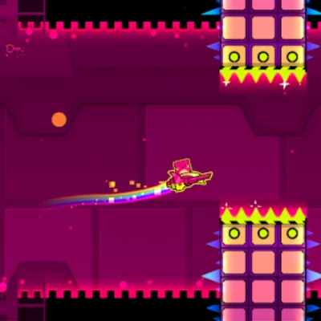
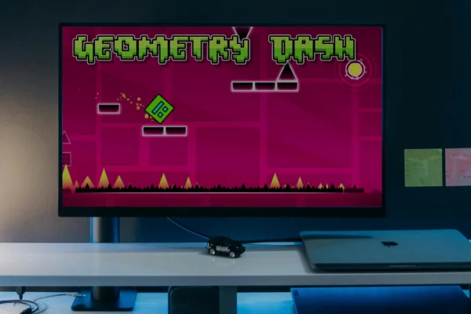

Download Geometry Dash APK for PC
Take your gaming to the next level by downloading Geometry Dash for PC. Enjoy crystal-clear graphics, precise controls, and lag-free performance on both Windows and Mac. With this PC version, you can experience every jump and beat in full HD while exploring user-created levels and endless challenges. Follow our step-by-step guide to download and install Geometry Dash on PC safely and start playing today.
Play on PC via Emulator
Get the full Geometry Dash experience on your computer by using an Android emulator. This method lets you play the mobile version on a bigger screen with better controls.


Why Play on PC?
Experience Geometry Dash like never before on your PC. Enjoy superior graphics, precise controls, and enhanced performance that takes your gameplay to the next level.
Immersive Display
Play on a larger screen with stunning clarity. Every obstacle, every detail becomes crystal clear, making those precision jumps easier to execute.
Superior Controls
Master difficult levels with responsive keyboard controls or connect your favorite gamepad for ultra-precise timing and movements.
Peak Performance
Harness your PC's processing power for buttery-smooth 60+ FPS gameplay, faster load times, and lag-free experience even in complex custom levels.
Multi-Tasking Freedom
Switch between the game and other applications seamlessly. Watch tutorials, check guides, or chat with friends while playing.
How to Install Geometry Dash on PC
Follow these simple steps to get Geometry Dash running on your Windows or Mac computer
Download an Emulator
Start by downloading a reliable Android emulator like BlueStacks, NoxPlayer, or LDPlayer. These programs let you run Android apps on your PC. BlueStacks is our top recommendation because it's user-friendly and well-optimized for gaming.
Install the Emulator
Run the emulator installer and follow the on-screen instructions. The setup wizard will guide you through the installation process. Once installed, launch the emulator and complete the initial setup, which includes signing in with your Google account.
Download Geometry Dash APK
Download the Geometry Dash APK file from our website to your computer. Make sure to save it in an easily accessible location like your Downloads folder. The file is verified and safe to install.
Install the APK in Emulator
Open your emulator and drag the Geometry Dash APK file into the emulator window. Alternatively, use the emulator's built-in APK installer. The game will install automatically within a few moments.
Launch and Play
Once installed, you'll see the Geometry Dash icon in your emulator's app drawer. Click it to launch the game. You can now enjoy Geometry Dash on your PC with full keyboard and mouse support!
Note: The listed methods involve third-party Android emulators like BlueStacks and LD Player for running the game's Android version on PC.
PC Version Features
Experience Geometry Dash like never before on your computer
HD Graphics
Enjoy crisp, high-definition visuals on your monitor. Every color, effect, and animation looks stunning in full resolution.
Keyboard Controls
Master difficult levels with precise keyboard inputs. Map any key for jumping and enjoy responsive, lag-free control.
Platformer Mode
Experience the revolutionary new game mode with enhanced physics and movement. Control your character with WASD keys for a fresh gameplay experience.
60+ FPS Support
Unlock higher frame rates for ultra-smooth gameplay. Your PC can handle 60 FPS or higher for the most fluid experience possible.
No Ads
Play without interruptions. The APK version removes all advertisements for a pure, uninterrupted gaming session.
Level Editor Access
Create complex levels with ease using a mouse and keyboard. The larger screen and precision controls make building easier than ever.
System Requirements
Minimum Requirements
Recommended Specs
PC Version FAQ
Common questions about playing Geometry Dash on PC, including emulator setup, performance tips, and troubleshooting guidance.
BlueStacks is hands-down the best choice for running Geometry Dash on PC. It's specifically optimized for gaming, offers excellent performance, and handles the game's timing-critical mechanics perfectly. The latest BlueStacks 5 version is lighter on system resources while delivering smooth 60 FPS gameplay even on modest hardware.
That said, NoxPlayer and LDPlayer are solid alternatives if you prefer different interfaces. Both support keyboard mapping and run Geometry Dash without issues. MEmu is another option that works well for Windows users. The key is choosing an emulator that's actively maintained and has good compatibility with Android 5.0+ apps.
Absolutely! Most Android emulators support controller mapping, so you can connect an Xbox, PlayStation, or any generic USB/Bluetooth controller. In your emulator settings, you'll find a keymapping or controller configuration option where you can assign the jump action to any button you prefer – most players use a face button or shoulder trigger.
Controllers can actually give you a competitive edge on difficult levels because they offer tactile feedback and consistent input timing. Just make sure your controller is properly connected before launching the emulator, and don't forget to test your button mappings in the game's practice mode first.
Yes, reputable emulators like BlueStacks, NoxPlayer, and LDPlayer are completely safe when downloaded from their official websites. These are legitimate software companies with millions of users worldwide. They undergo regular security audits and don't contain malware or spyware.
The key is to download from official sources only – never from third-party download sites. Emulators do require certain permissions to function (like virtualization), which might trigger antivirus warnings, but these are false positives. If you're concerned, add an exception in your antivirus software for the emulator's installation folder after downloading from the official site.
Lag on PC usually comes from the emulator not being allocated enough resources. Open your emulator's settings and increase the RAM allocation to at least 4GB (preferably 6-8GB if your system allows). Also, make sure you've enabled virtualization (VT-x for Intel, AMD-V for AMD) in your BIOS – this dramatically improves emulator performance.
Other quick fixes: close unnecessary background programs, update your graphics drivers, and set the emulator to use your dedicated GPU instead of integrated graphics. In BlueStacks specifically, go to Settings > Performance and choose "High performance" mode. If you're still experiencing issues, try lowering the display resolution to 720p in the emulator settings.
Yes! As long as you're logged into your Geometry Dash account on both devices, your progress will sync automatically. In the game, go to Settings > Account and make sure you're signed in with the same credentials you use on your phone. Your stars, achievements, unlocked icons, and even custom levels will transfer over.
Keep in mind that you'll need an internet connection for the initial sync. Once synced, you can play offline on PC, but you'll need to connect again to upload any new progress back to the cloud. This cloud save feature works across all platforms – mobile, PC via emulator, and even the official Steam version.
Yes, you can play Geometry Dash on Mac using BlueStacks for macOS, which is available for macOS 10.12 Sierra and newer. The Mac version of BlueStacks is well-optimized and runs Geometry Dash smoothly on both Intel-based Macs and newer Apple Silicon (M1/M2/M3) Macs through Rosetta 2 translation.
For M1/M2/M3 Mac users, performance is actually excellent despite the translation layer. Just make sure you have at least 8GB of RAM on your Mac for the best experience. Alternatively, you could purchase the official Geometry Dash version from the Mac App Store if you prefer a native app, though the APK version via emulator is free and offers the same features.
While not strictly required, enabling virtualization (VT-x for Intel or AMD-V for AMD processors) dramatically improves emulator performance – we're talking about a 3-5x speed boost in many cases. Without it, you'll likely experience significant lag, stuttering, and slow load times that make rhythm-based games like Geometry Dash nearly unplayable.
To enable it, restart your PC and enter BIOS (usually by pressing F2, F10, Del, or F12 during boot). Look for "Virtualization Technology," "VT-x," "AMD-V," or "SVM Mode" in the Advanced or CPU settings, enable it, save, and exit. The exact steps vary by motherboard manufacturer, but most modern systems have it available. Once enabled, you'll notice immediate performance improvements in your emulator.
Plan for about 2-3GB total. The emulator itself (BlueStacks, Nox, etc.) typically takes around 1-1.5GB, and Geometry Dash APK adds another 158MB. However, you'll want extra space for the emulator's system files, cache, and any custom levels you download – these can add up quickly if you're active in the community content scene.
We recommend having at least 5GB of free space on your hard drive to be safe. If you're using an SSD (which we highly recommend for better load times), make sure the emulator is installed on the SSD rather than a slower mechanical hard drive. You can usually choose the installation directory during the emulator setup process.
Gameplay Tips & Tricks for PC Players
Take your skills to the next level. Playing on PC offers unique advantages—here's how to make the most of them.
Master Keyboard Controls
The biggest advantage on PC is the keyboard. Use the up arrow or spacebar for jumps. Consistent key presses are more reliable than touch screen taps for precise timing.
High Refresh Rate Monitor
If you have a monitor with a high refresh rate (120Hz or more), use it! Higher FPS reduces input lag, making frame-perfect jumps much easier to execute.
Use Practice Mode Extensively
Practice mode is your best friend for learning hard levels. Place checkpoints to master difficult sections without having to restart the entire level.
Reduce Input Lag
For the best performance, disable V-Sync in your graphics card settings and close any unnecessary background applications before you start playing.
Backup Your Data
Always save your progress to your Geometry Dash account, especially when playing on an emulator. This prevents data loss if the emulator has issues.
Optimize Emulator Settings
In your emulator's settings, allocate more CPU cores and RAM to it. This can drastically improve performance and reduce lag on complex levels.